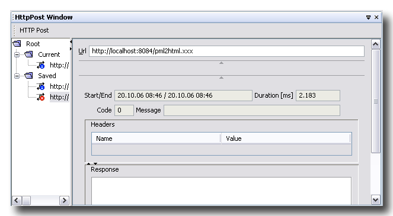
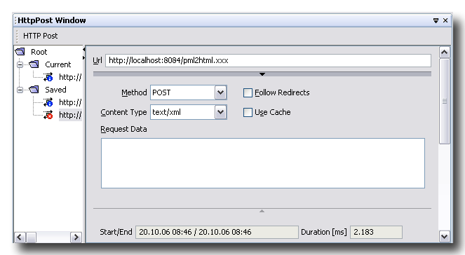
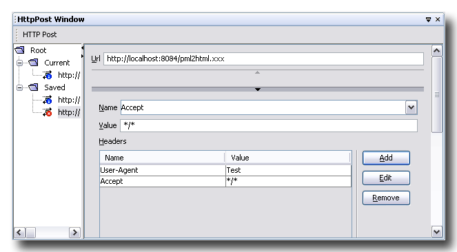
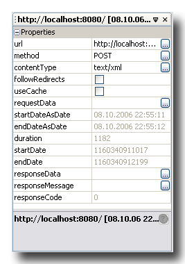

This module helps you posting ad-hoc http-requests.
The most simple way to use the http-post module do the following steps:
Pressing HttpPost sends the URL in the http-post window.
The response section of the http-post window displays the response information.
Moreover the tree view shows the sent URL in the folder Current.
You can specify details of the request data by clicking the tap panel separator:
You can specify the request headers by clicking the tap panel separator:
The tree view of the http-post window displays two folder nodes:
The folder Current displays all URLs posted during a user session. Nodes in this folder offers following node actions:
The folder Saved displays all URLs saved to the filesystem. During startup saved URLs are loaded into this folder. Nodes in this folder offers following node actions:
Moreover the properties of the currently selected node are shown in properties window.

Persisted URLs are stored in the filesystem at location
{nbuser.dir}/config/httppost.
The name of the files are calculated from
the start-date, and end-date of the URL post.
The data format of the files are the format as defined by
java.beans.XMLEncoder, and
java.beans.XMLDecoder.